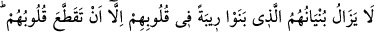

Katâde demiştir ki: Bize anlatıldığına göre Mescid-i Dırar’dan bir bölge kazılmış,
oradan duman çıktığı görülmüştür. Câbir b. Abdullah ise Mescid-i Dırar’dan duman
çıkarken gördüğünü söylemiştir.
Haddâdî âyetin tefsiri ile ilgili olarak şunları söylemiştir: Yukarıda özelliği
anlatıldığı gibi bir ırmak kenarında bina yapan kimsenin binası nasıl suya yıkılırsa
münâfıkların müminlere muhâlefet ve düşmanlık için yaptıkları mescid de cehennemin
kenarında altı oyulmuş, çatlak toprak üzerine kurulan ve içinde bulunanları cehenneme
yuvarlayan bir binaya benzer.
“Allah, zalimler topluluğunu” kendilerine zulmedenleri ya da eşyâyı bulunması
gereken yerden başka yere koyanları “doğru yola iletmez.” Yani, onları kurtuluşlarının
ve iyi âkıbetlerinin bulunduğu şeye ulaştıran bir irşad ile asla irşad etmez. Ancak onlara
kendilerini irşad edeceği yeri gösterir. Onlar ona ulaşmayı isterlerse bu şüphesiz
gerçekleşir.
Hakîkatte zulüm, dünyaya kulluğu, dünya sevgisini, onu kazanma hırsını Allah Teâlâya
ibadet, O’nun muhabbeti ve O’nu talebde sadakat yerine koymaktır.
110. Yaptıkları bina, kalpleri parçalanıncaya dek yüreklerinde bir şüphe olarak
kalacaktır. Allah çok iyi bilendir, hüküm ve hikmet sâhibidir.
“Yaptıkları binâ” ifâdesi, onların o binayı en zayıf ve en çürük bir temel üzerine
yapıp kurduklarını bildirmek ve hükmün illetini haber vermek içindir. Yani onların bu
mescidi, yapılmış ve yıkılmış olarak onların “kalpleri parçalanıncaya” param parça
olup hiçbir idrak ve (küfrü) gizleme kabiliyeti kalmayacak şekilde parçalara ayrılıncaya
“dek yüreklerinde bir şüphe” dinde şek ve şüphe sebebi, hatta sanki bizzat şüphenin
kendisi “olarak kalacaktır.”
İnşâ edilmiş haliyle şek ve şüphe sebebi olması, açık bir durumdur. Çünkü onların
müminlerden ayrılıp (Mescid-i Kubâ’nın) karşısında bir toplantı mahallinde
toplanmaları ve burada kalplerindeki şirk ve nifak eserlerini ortaya dökmeleri, işlerini
buradan sevk ve idare etmeleri, burada görüş alış verişinde bulunmaları, müminler
hakkında işittikleri sırları birbirlerine aktarmaları, onların dindeki şek ve şüphelerini
artıran şeylerdir. Yıkılmış haliyle şek ve şüphe sebebi olmasına gelince, bu yüzden
onların kalplerinde var olan şer ve fesat iyice yerleşmiş, onun eserleri ve hükümleri kat
kat artmıştır.
Âyetteki “kalpleri parlanıncaya dek” şeklinde ifâde edilen istisna, bütün vakitlerden
olabileceği gibi bütün hallerden de olabilir. Yani, onların inşa ettikleri bina, her zaman
veya her durumda şüphe olarak kalacaktır. Ancak kalpleri parçalandığı zaman bundan